GO 對戰聯盟盃賽 · CP 1,500
意志力盃：超級聯盟版推薦排名
意志力盃只開放格鬥、超能力和惡三種屬性，三者彼此剋制，帶惡屬性或能打惡屬性的寶可夢特別吃香。這份榜單依 PvPoke 對戰模擬的分數排序，列出前 100 名寶可夢與推薦招式；想知道你手上那隻的 IV 排第幾，點右邊的「查 IV」直接帶入。
- 資料更新 2026-11-08
- 收錄 281 隻・顯示前 100 名
- 本季開放時間
- 限定 限定招式
參賽規則
- 寶可夢 CP 必須在 1,500 以下。
- 僅限格鬥、超能力和惡屬性寶可夢參加。
- 無法參賽：沙奈朵、索羅亞、索羅亞克。
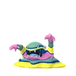
1臭臭泥（阿羅拉）毒惡97.8一般毒擊特殊狂舞揮打冰凍拳查 IV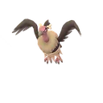
2禿鷹娜惡飛行97.3一般空氣斬特殊惡之波動燕返查 IV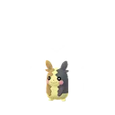
3莫魯貝可（滿腹花紋）電惡95.0一般電擊特殊氣場輪精神之牙查 IV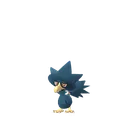
4黑暗鴉暗影惡飛行94.6一般啄特殊啄鑽欺詐查 IV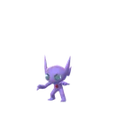
5勾魂眼惡幽靈94.6一般暗影爪特殊欺詐魔法閃耀查 IV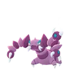
6龍王蠍毒惡94.4一般毒針特殊咬碎水流尾查 IV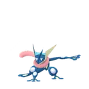
7甲賀忍蛙暗影水惡93.9一般飛水手裡劍特殊加農水砲限定狂舞揮打查 IV- 8臭臭泥（阿羅拉）暗影毒惡93.5一般毒擊特殊狂舞揮打冰凍拳查 IV
- 9棄世猴暗影格鬥幽靈92.8一般踢倒特殊憤怒之拳限定冰凍拳查 IV
- 10棄世猴格鬥幽靈92.4一般踢倒特殊憤怒之拳限定冰凍拳查 IV
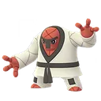
11投摔鬼格鬥91.8一般踢倒特殊劈瓦泰山壓頂查 IV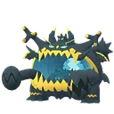
12惡食大王惡龍91.6一般龍尾特殊狂舞揮打龍爪查 IV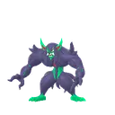
13長毛巨魔惡妖精91.2一般踢倒特殊欺詐吸取之吻查 IV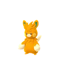
14巴布土撥電格鬥91.0一般電擊特殊劈瓦限定瘋狂伏特查 IV- 15念力土偶地面超能力90.9一般擲泥特殊岩石封鎖大地之力查 IV
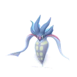
16烏賊王惡超能力90.2一般啄特殊蠻力欺詐查 IV- 17黑暗鴉惡飛行90.2一般啄特殊啄鑽欺詐查 IV
- 18勾魂眼暗影惡幽靈90.2一般暗影爪特殊欺詐吸取拳查 IV
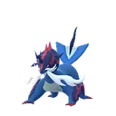
19大劍鬼（洗翠）水惡90.0一般連斬特殊聖劍惡之波動查 IV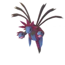
20三首惡龍暗影惡龍89.9一般龍息特殊狂舞揮打限定飛翔查 IV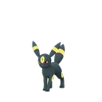
21月亮伊布惡89.7一般大聲咆哮特殊惡之波動珍藏限定查 IV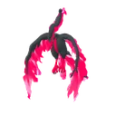
22火焰鳥（伽勒爾）惡飛行89.5一般突襲特殊飛翔勇鳥猛攻查 IV- 23投摔鬼暗影格鬥89.0一般踢倒特殊劈瓦泰山壓頂查 IV
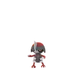
24駒刀小兵惡鋼88.9一般連斬特殊暗襲要害鐵頭查 IV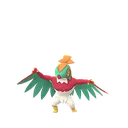
25摔角鷹人格鬥飛行88.7一般踢倒特殊飛身重壓燕返查 IV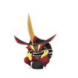
26仆斬將軍惡鋼88.6一般踢倒特殊欺詐鐵頭查 IV- 27烏賊王暗影惡超能力88.5一般啄特殊欺詐蠻力查 IV
- 28龍王蠍暗影毒惡88.2一般毒針特殊咬碎水流尾查 IV
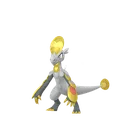
29鱗甲龍龍格鬥88.1一般龍尾特殊劈瓦岩石封鎖查 IV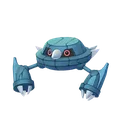
30金屬怪暗影鋼超能力88.1一般連斬特殊精神衝擊陀螺球查 IV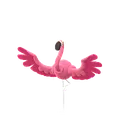
31纏紅鶴飛行格鬥87.7一般啄特殊快手還擊勇鳥猛攻查 IV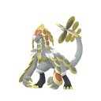
32杖尾鱗甲龍龍格鬥87.5一般龍尾特殊鱗片噪音限定快手還擊查 IV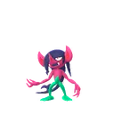
33詐唬魔惡妖精87.5一般突襲特殊欺詐嬉鬧查 IV- 34三首惡龍惡龍87.4一般龍息特殊狂舞揮打限定飛翔查 IV
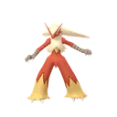
35火焰雞火格鬥87.2一般火花特殊波導彈爆炸烈焰限定查 IV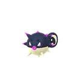
36千針魚（洗翠）惡毒87.2一般毒針特殊水流尾惡之波動查 IV- 37甲賀忍蛙水惡87.0一般飛水手裡劍特殊加農水砲限定狂舞揮打查 IV
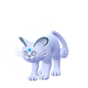
38貓老大（阿羅拉）惡86.9一般抓特殊欺詐嬉鬧查 IV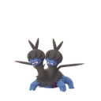
39雙首暴龍暗影惡龍86.9一般龍息特殊泰山壓頂惡之波動查 IV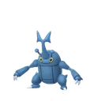
40赫拉克羅斯蟲格鬥86.6一般連斬特殊快手還擊岩石封鎖查 IV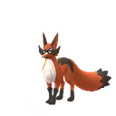
41狐大盜惡86.6一般突襲特殊暗襲要害冰凍之風限定查 IV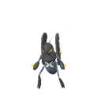
42烈腿蝗蟲惡86.4一般蟲咬特殊十字剪起草查 IV- 43金屬怪鋼超能力86.4一般連斬特殊精神衝擊陀螺球查 IV
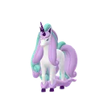
44烈焰馬（伽勒爾）超能力妖精86.0一般妖精之風特殊泰山壓頂瘋狂伏特限定查 IV- 45蚊香泳士水格鬥85.9一般泥巴射擊特殊冰凍之風爆裂拳查 IV
- 46坦克臭鼬毒惡85.9一般毒擊特殊咬碎起草查 IV
- 47豪力暗影格鬥85.8一般空手劈特殊十字劈限定爆裂拳查 IV
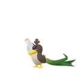
48大蔥鴨（伽勒爾）格鬥85.7一般連斬特殊葉刃劈瓦查 IV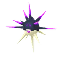
49萬針魚惡毒85.5一般毒針特殊水流尾惡之波動查 IV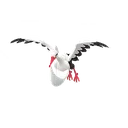
50下石鳥飛行惡85.4一般突襲特殊飛翔直衝鑽查 IV- 51火焰雞暗影火格鬥85.3一般火花特殊波導彈火焰踢查 IV
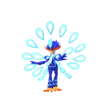
52狂歡浪舞鴨水格鬥85.2一般踢倒特殊近身戰加農水砲限定查 IV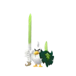
53蔥遊兵格鬥85.0一般連斬特殊葉刃近身戰查 IV- 54雙首暴龍惡龍85.0一般龍息特殊泰山壓頂惡之波動查 IV
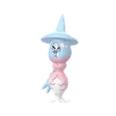
55布莉姆溫超能力妖精84.4一般撒嬌特殊精神衝擊強力鞭打查 IV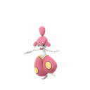
56恰雷姆格鬥超能力84.4一般精神利刃特殊冰凍拳爆裂拳查 IV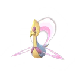
57克雷色利亞超能力84.2一般精神利刃特殊打草結限定月亮之力查 IV- 58蚊香泳士暗影水格鬥84.2一般泥巴射擊特殊冰凍之風爆裂拳查 IV
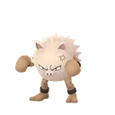
59火爆猴暗影格鬥84.2一般空手劈限定特殊憤怒之拳限定冰凍拳查 IV- 60流氓熊貓格鬥惡84.0一般空手劈特殊近身戰暗襲要害查 IV
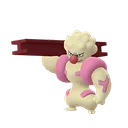
61鐵骨土人暗影格鬥83.9一般踢倒特殊劈瓦尖石攻擊查 IV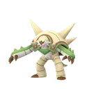
62布里卡隆草格鬥83.8一般踢倒特殊瘋狂植物限定蠻力查 IV- 63念力土偶暗影地面超能力83.8一般擲泥特殊岩石封鎖大地之力查 IV
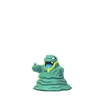
64臭泥（阿羅拉）毒惡83.7一般毒擊特殊咬碎污泥炸彈查 IV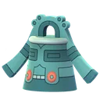
65青銅鐘鋼超能力83.6一般金屬音特殊氣象球 水重踏查 IV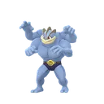
66怪力暗影格鬥83.6一般空手劈限定特殊十字劈岩崩查 IV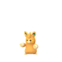
67布土撥電格鬥83.4一般電擊特殊瘋狂伏特雷電拳查 IV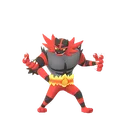
68熾焰咆哮虎火惡83.3一般火焰牙特殊吸取拳爆炸烈焰限定查 IV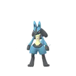
69路卡利歐格鬥鋼83.2一般發勁限定特殊波導彈暗影球查 IV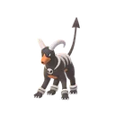
70黑魯加暗影惡火83.1一般燒盡特殊欺詐起草查 IV- 71禿鷹丫頭惡飛行82.9一般空氣斬特殊勇鳥猛攻欺詐查 IV
- 72飛腿郎暗影格鬥82.8一般踢倒特殊火焰踢劈瓦限定查 IV
- 73布里卡隆暗影草格鬥82.7一般踢倒特殊瘋狂植物限定蠻力查 IV
- 74修建老匠暗影格鬥82.6一般發勁特殊爆裂拳狂舞揮打限定查 IV
- 75艾路雷朵暗影超能力格鬥82.6一般踢倒特殊葉刃聖劍查 IV
- 76怪力格鬥82.6一般空手劈限定特殊十字劈岩崩查 IV
- 77頭巾混混惡格鬥82.4一般雙倍奉還特殊欺詐快手還擊查 IV
- 78烏鴉頭頭惡飛行82.2一般啄特殊勇鳥猛攻惡之波動查 IV
- 79花岩怪幽靈惡82.2一般突襲特殊岩石封鎖暗影球查 IV
- 80班基拉斯岩石惡81.6一般龍息特殊狂舞揮打尖石攻擊查 IV
- 81克雷色利亞暗影超能力81.3一般精神利刃特殊打草結限定月亮之力查 IV
- 82修建老匠格鬥81.2一般發勁特殊爆裂拳狂舞揮打限定查 IV
- 83黑魯加惡火81.2一般燒盡特殊欺詐起草查 IV
- 84鐵掌力士暗影格鬥81.0一般發勁特殊快手還擊重磅衝撞查 IV
- 85毒骷蛙毒格鬥81.0一般毒針特殊爆裂拳暗影球查 IV
- 86閃電鳥（伽勒爾）格鬥飛行81.0一般踢倒特殊飛翔近身戰查 IV
- 87鐵骨土人格鬥80.9一般踢倒特殊劈瓦尖石攻擊查 IV
- 88豪力格鬥80.8一般空手劈特殊十字劈限定報恩查 IV
- 89腕力格鬥80.7一般空手劈特殊十字劈劈瓦查 IV
- 90頑皮熊貓格鬥80.5一般踢倒特殊咬碎泰山壓頂查 IV
- 91艾路雷朵超能力格鬥80.4一般踢倒特殊葉刃聖劍查 IV
- 92搬運小匠格鬥80.4一般踢倒特殊劈瓦岩石封鎖查 IV
- 93烏鴉頭頭暗影惡飛行80.3一般啄特殊勇鳥猛攻惡之波動查 IV
- 94火爆猴格鬥80.0一般空手劈限定特殊憤怒之拳限定冰凍拳查 IV
- 95坦克臭鼬暗影毒惡80.0一般毒擊特殊咬碎起草查 IV
- 96搬運小匠暗影格鬥79.9一般踢倒特殊劈瓦岩石封鎖查 IV
- 97打擊鬼暗影格鬥79.8一般踢倒特殊劈瓦泰山壓頂查 IV
- 98鐵掌力士格鬥79.7一般發勁特殊快手還擊重磅衝撞查 IV
- 99腕力暗影格鬥79.7一般空手劈特殊十字劈劈瓦查 IV
- 100代歐奇希斯（防禦）超能力79.6一般踢倒特殊精神突進十萬伏特查 IV
意志力盃：超級聯盟版常見問題
意志力盃：超級聯盟版的規則是什麼？
寶可夢 CP 必須在 1,500 以下。僅限格鬥、超能力和惡屬性寶可夢參加。無法參賽：沙奈朵、索羅亞、索羅亞克。
意志力盃：超級聯盟版什麼時候開放？
第 28 季（黃昏之旅）的開放時間（台灣時間）：9/16（三）04:00～9/23（三）04:00。實際以遊戲內與官方公告為準。
這份排名的分數怎麼來的？
分數來自 PvPoke 的對戰模擬：只用符合意志力盃：超級聯盟版規則的寶可夢，讓牠們用推薦招式互相以各種護盾數對打，綜合勝率與表現算成 0～100 的分數。分數越高，代表在這個盃賽越全面，但實戰仍要看隊伍搭配與對手。
意志力盃：超級聯盟版要什麼樣的 IV？
盃賽的 IV 排名只跟 CP 上限有關。這個盃賽是 CP 1500，所以 IV 怎麼挑跟超級聯盟完全一樣：攻擊 IV 低、防禦與 HP 高的個體能升到更高等級，總能力值更大。點榜單上的「查 IV」就能查你手上那隻的名次。
「限定」招式是什麼意思？
標「限定」的是限定招式：平常進化或用招式學習器學不到，只能在社群日等特定活動，或用厲害招式學習器學到。如果你的寶可夢沒有這個招式，強度會比排名低。
排名多久更新？
本站每天會多次檢查 PvPoke 的最新排名，前 100 名有變動就自動重新產生這頁，頁首的「資料更新」就是最近一次變動的日期。
找到想練的寶可夢了？
用 PvP IV 排名工具查你手上那隻在 CP 1500 的 IV 排第幾，以及要升到幾級、CP 多少。